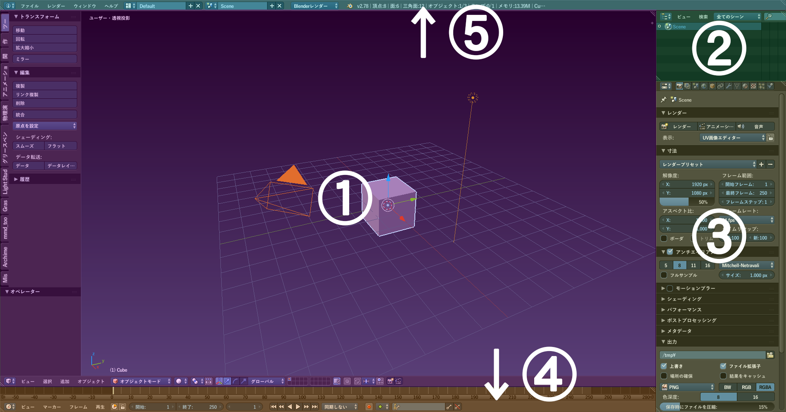
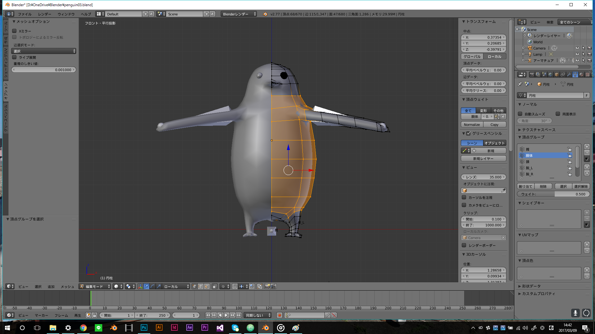

簡単なシーンの制作#
Warning
このテキストは2017年4月に書かれたテキストをWeb用に変換したものです
本章では簡単なシーンの製作を通じて以下の内容を学習します。
- インタフェースの解説
- モデリングの基礎
- ショートカットキーの活用
- モディファイアの活用
- リギング
- UV展開とテクスチャの貼り方
- ライティングとマテリアルの作成
- レンダリング
インタフェース#
 初期設定では図のようなウィンドウ構成となっています。それぞれの用途は以下の通りです。
１.3Dビューウィンドウ#
3D空間上にオブジェクトやランプ、カメラなどを表示するウィンドウです。 大体の作業はこのウィンドウで行います。 Tを押すことによってツールシェルフ(shelf:棚)を開き、Nを押すことでプロパティウィンドウを開きます。 (この操作はほかのウィンドウでも同様にできる) ツールシェルフには置いたオブジェクトに対して変形する機能などが格納されており、 プロパティシェルフにはオブジェクトの位置情報などが格納されています。
２.アウトライナーウィンドウ#
シーン上にあるすべてのオブジェクトの階層関係が参照できるウィンドウ。 ここからオブジェクトの選択も行えます。
３.プロパティウィンドウ#
シーンやオブジェクトの情報やレンダリング時の画質など、様々な設定を追加、変更するウィンドウ。
４.タイムラインウィンドウ#
現在のフレームの位置を表示する。主にアニメーションや物理演算の際に見ることが多いです。
５.情報ウィンドウ#
ファイルの読み書きやレンダリング方法の変更を行うウィンドウ。ヘッダだけのようにも見えるが、境界線部をドラッグで引っ張ることでウィンドウを見ることができます。が、スクリプトを自作するとき以外はほとんど使わないです。
よく使う3Dビューウィンドウのヘッダについても解説します。 [オブジェクトモード]ボタンをクリックすると、様々なモードが表示されますが、モデリング作業では主にオブジェクトモードと編集モードを多用します。 オブジェクトモードではオブジェクト自体の移動や拡大、新規オブジェクトの追加を行い、 編集モードではオブジェクトのメッシュの編集などオブジェクトの形状の変更を行います。
オブジェクトモードと編集モードはTabキーでも行き来できます。
モデリングをしよう#
いきなり人体のような複雑なモデルを作るのではなくここでは簡単なモデルを作っていきます。
この章では簡単な変形のみで作れそうなペンギンを作ることにします

円柱の追加#
まずは起動画面にあるキューブが邪魔なので消しましょう。キューブを右クリックで選択しDelキーで消すことが可能です。
ペンギンは大体円柱型なので円柱型オブジェクトを変形して作っていきます。新規オブジェクトの追加はShift+Aです。そこから円柱を選択しましょう。

その後、左下にある「▼円柱を追加」から頂点を32から8に、ふたのフィルタイプをNゴンから三角の扇形に変更してください。
Tips
Shift+Aでオブジェクトを追加した際、オブジェクトは3Dカーソルの位置に追加されます。
3Dカーソルを指定した位置に動かすには3Dビューウィンドウ上を左クリックします。万一動かしたくないときに3Dカーソルを動かしてしまった際には Shift+Cで3Dカーソルの位置を原点まで戻すことができます。
なお、Shift+Cは3Dカーソルを原点に戻すとともに全オブジェクトを一画面に収めるショートカットキーです。
視点移動と拡大縮小#
Blenderでは主にマウスの中ボタン(ホイール押下)と、テンキーを用いて視点の変更を行います。
その視点操作方法は下図のようになります。
Num 5による投影の変更とは透視投影(Perspective Projection)と平行投影(Orthographic Projection)の入れ替えです。 透視投影とは三次元の立体を見たまま描画し、平行投影とは焦点が無限遠にあるようにすなわち三次元上の二点と視点を結んだ線が平行になるように立体を描画します。 モデリング作業中は主に平行投影で行います。
Num 1を押して正面視点に移ります。
ペンギンは縦長の円柱であるので配置した円柱を縦方向に拡大しましょう。円柱を選択しSキーを押します。Sは拡大縮小のショートカットキーです。 X軸Y軸Z軸の一方向にだけ拡大縮小したいときはそれぞれX,Y,Zを を押すことで可能です。今回はZを押して縦方向に拡大します。
適当な長さに拡大しEnterで確定します。
大体の形を作る#
Tabを押し編集モードに移ります。ペンギンの概形を作るためにはメッシュ数を増やす必要があります。このようにメッシュを縦や横の一方向にのみ分割したいときに便利な機能がループカットです。 左側のツールシェルフより選択するかCtrl+Rを押します。

オブジェクトの縦方向に分割を入れたいので上の図を参考にピンク色の補助線が横方向にぐるりと回るようにします。分割数をさらに増やしたいときはホイールを回転させます。 適当な分割数にすることができたらEnterを押します。その後、分割の位置をずらすことができますが、今回はずらさないので再度Enterを押してループカットを確定させます。
今回は8等分(切れ込みを7つ)にしました。
次に頂点を縮小させます。頂点が選択されている場合はAキーを押して選択を解除させます。8等分したうちの上2つを縮小させ、頭の部分にしましょう。
頭部とする頂点を一気に選択したい場合、便利なものが矩形選択とAltを押したまま選択の2種類があります。
矩形選択を利用する場合はBを押します。しかし、このままではデフォルトでは隠面処理がオンになっているので、前面の頂点 のみしか選択されません。なのでこれをオフにします。隠面処理は見えている部分のみを描画するように処理します。 見えない位置にある頂点を選択したい際は隠面処理をオフに します。隠面処理の切り方は3Dビューウィンドウのヘッダにあるボタンをクリックします。
隠面処理をオフにしたら上2つを矩形選択し縮小させます。
また、Altキーを押しながら辺を選択することで、ループしている辺を一括で 選択できます。さらに、Shiftキーを押しながら頂点を選択すると複数の頂点が選択できるようになります。これを利用して、上部の頂点をまとめて選択してもよいです
首のメッシュが長くなってしまったのでループカットで2等分しましょう。

さて次は各辺を適当に拡大縮小し、有機的な曲線を作っていきます。これらを活用して先程作成した辺ループを拡大縮小させて大体の胴体の形を作ります。

形の調整#
頭の頂点と尻の形も調整していきましょう。

一度頭頂の尻の一番下にある頂点を削除した後、頭頂部に移動し、空洞になった辺を選択します。

その後、Eを押すことで辺を押し出しします。 今回は押し出した辺を縮小させたいので、Enterを押し押し出しを確定させた後Sで縮小します。これを数回繰り返し、最後にAlt+Mを押して[中心に]を 選択し、頂点を一か所にまとめましょう
尻の方も同様の処理を行います。
分割した面をAltやShiftを駆使して、形を整えましょう。
くちばしをつくる#
胴体が完成したら再び正面視点に戻り、ナイフで口の位置にくちばしの形に切れ込みを入れます。 切り込みが終わったら出来上がった菱形を選択し、右からの視点に移りましょう。
ペンギンのくちばしを作るにはここでもEキーによる押し出しを使用します。Eを押した後、適当な長さにくちばしを伸ばしEnterで確定させます。
 縮小とループカットを活用してくちばしのような形に整えましょう。
縮小とループカットを活用してくちばしのような形に整えましょう。
モディファイアを追加しよう#
これでペンギンの胴体が完成しました。次に羽や足を作っていくのですがこれらのパーツは左右対称です。このような左右対称なオブジェクトをモデリングする際に便利な機能がミラーモディファイアです。 モディファイアはプロパティウィンドウのレンチマークのモディファイアタブから追加できます。

モディファイアを追加する前にペンギンの左半分を削除しましょう。

また、細分割曲面モディファイアを追加すると少ないポリゴン数でも滑らかにオブジェクトが描画されるようになります。オブジェクトモードに移りこの二つを 追加した後鏡面にある頂点を接合させるため、ミラーモディファイアのクリッピングをオンにします。(ミラー→細分割曲面の順に適用させてください)

最後に、メッシュを滑らかに描画するために、ツールシェルフより編集タブの中からシェーディング:[スムーズ]を選択します。
これで胴体の完成です。
羽根を作る#
これまでに紹介したショートカットを活用すれば後の体の部位は容易に作ることが可能です。
胴体の頂点から上の図のように適当な位置の頂点を4つ選択しEキーにより押し出しを行いましょう。 押し出した頂点を大体の位置に移動し終えたらループカットをし、メッシュを分割させます。

あとは実際の写真などとにらめっこして各頂点の位置を微調整しましょう。羽根の根元と手先はカーブの変化が急なのでその付近ではメッシュの分割数を
増やし、手前側にある頂点を若干上方向に移動するなどすると、よりそれっぽい形にさせましょう。

脚を作る#
下面に視点移動したい際はCtrl+Num 7で可能です。Ctrlキーを押しながらNum 1,Num 3,Num 7を押すと前面、右面、上面の逆視点、すなわち 後面、左面、下面に視点移動します。

底面に六角形状の切れ込みを入れます。さらにメッシュの形状は四角形にした方が後々ループカットで分割数を増やす際に便利であるので

次に上の図のように切り込みを入れましょう。(ただしこの状態ではうまくループカットできません。下のQuestionを参照にしてください)
Question
細分割曲面とスムーズシェーディングを解除した際、底面のメッシュは下図のようになっています。
この状態でループカットを適用しようとしても下図の太波線ように三角形ポリゴンが隣にあるためうまく辺ループが周回しません。
そこで、ツールシェルフの削除:から上の図の太実線の辺を溶解させ、下図のようにカットしましょう。

複雑なオブジェクトを作る際はメッシュの流れを意識する必要があります。流れに沿った方がメッシュの変形もしやすいし細分割曲面を適用した際などに メッシュが変な形状にならなくなります。
たとえば碁盤目状に並んだメッシュに対して以下のようなメッシュの流れを追加したい場合を考えます。
その際には、まず大筋の流れを描いてから(下図)、

変な形状になったメッシュを分割させます(下図)

メッシュの流れを意識しながらモデリングすることは非常に難しいですが、慣れれば少ない手数できれいな形状にモデリングを行うことが可能です。 日ごろからなるべく意識するようとよいでしょう
さて、切れ込みを入れたメッシュを下方向に伸ばします(下図参照)。
伸ばした面を平らにならすにはS→Z→0で可能です。0倍拡大で頂点を均す操作はよく使うので 覚えておきましょう。

ループカットにより、メッシュを細かくした後微調整します。
調整終了後、前3つの面を選択しEで伸ばします。さらにツールシェルフ内のメッシュツールタブから追加:個々に押し出しを選択し、面ごとに押し出して 足の指を作ります。
尻尾を作る#
背面に移動しナイフで以下のように切り込みを入れます。

中の面をEで伸ばし、伸ばした面を縮小し、まいどいつものように、ループカットにより細分化→微調整を行います。
目を追加する#
編集モード内でもShift+Aで立体を追加することが可能です。ミラーモディファイアを適用させているので3Dカーソルの位置を原点からずらしてから追加する 必要があります。
適当な場所を左クリックしたのちShift+AからUV球を追加します。
うまく球が追加できたなら、適当な大きさにまで縮小し、目の位置にまで移動させましょう。
これでモデリング作業は終了です。
リギングをしよう#
このままではペンギンが十字架に磔にされたポーズしか取れないのでペンギンに骨を作ってあげてあらゆるポーズを取れるようにしましょう。
骨を追加する#
ボーンの追加もメッシュと同様にShift+Aで行えます。

ボーンの構成は以下のようにしたいと思います。親ボーンとはモデル自体の位置を決めるボーンだと思っていただければよいです。

さて、新規ボーンを追加しましたがモデルに隠れてしまって編集がしにくいです。また、ボーンの名前が表示された方が後からボーンの構造を把握しやすいでしょう。 ボーンを常に最前面に表示するためにはプロパティウィンドウのオブジェクトタブから表示のレントゲンと名前にチェックを入れます。(下図参照)
動かしやすいようにボーンを足下に動かして90度回転させましょう。

その後、Tabキーにより編集モードに移りましょう。
ボーンの編集に移る前にボーンの構造について軽く説明します。
Tip
ボーンはヘッド、ボディ、テールの三要素で構成されています(上図(A)参照)。
ボーンはそれぞれ親子関係を持たせることが可能です。編集モードでボーンを選択しているときに[E]を押すことで親ボーンのテール部から子ボーンを押し出すことができます(上図(B)参 照)。 また、プロパティウィンドウのボーンボタン(骨のアイコン)から、関係タブの接続のチェックボックスを外すことで親ボーンから切り離して扱うことができます。
親ボーンの移動や回転に対し子ボーンはそれに追従しますが、子ボーンの移動や回転に対しては親ボーンは追従しません(上図(C)(D)参照)。
さて、編集モードに移ったならば、まずツールシェルフのオプションタブのX軸ミラーのチェックボックスにチェックを入れます。

左腕と右腕などの左右対称なボーンを編集する際に便利です。 まず、親ボーンを選択し、名前を変更します。プロパティウィンドウのボーンボタンより、名前を変更します。
名前を変更したら、親ボーンから3つ(胴体、左足、右足(X軸ミラーにチェックを入れているので実質2つ))の子ボーンを作成していきましょう。
親ボーンからEキーを押し、ボーンを押し出し、接続を外した後丁度胴体の中央に移動させましょう。
次に、両足のボーンを伸ばします。X軸ミラーにチェックを入れた状態で左右同方向にボーンを伸ばすにはShift+Eでできます。胴体のヘッドを選択し、左右にボーンを伸ばしましょう。
適当な位置に移動と回転をし、名前を変更します。
同様に、頭と左右の腕のボーンを伸ばしましょう
以上で骨の位置を設定する作業は終わりです。次は、骨を動かした際どの頂点がどのくらい骨の移動に応じて移動するかを設定する必要があります。この影響度のことは頂点ウェイトと呼ばれます。
頂点ウェイトを設定する#
頂点ウェイトを設定するためには、制作したオブジェクトをボーンの子に設定する必要があります。
設定の方法はオブジェクトモードで 最初にオブジェクトを選択したのち、次にボーンを選択しCtrl+Pで[空のグループで]を選択することで可能です。また、簡単なオブジェクトであれば、自動のウェイトでを選択することで簡単にウェイトの設定を行うことが可能です。
オブジェクトをボーンの子に設定したのならば、再度オブジェクトを選択して編集モードに移ります。 正しく設定できているのならば、プロパティウィンドウのデータボタン内の頂点グループ欄に設定したボーン名で頂点グループが作られます。

ここの各頂点グループに頂点ごとにウェイトを与えることで、ボーンの移動に対する頂点の影響度を設定することができます。設定方法は単純で、 ウェイトを設定したい頂点を選択したのち、設定するウェイトの量を頂点グループ内の[ウェイト: 1.00] (上図参照)から調整し、[割り当て]を押すことで適用されます。
例えば頭部の頂点ウェイトを設定する際は、次の図のように設定します。
同様にしてほかのボーンにも頂点ウェイトを設定していきます。(以下の図では境界部にある頂点のウェイトは0.5に設定してあります。)
胴#
↓前面↓ 
↓背面↓

腕#
↓前面↓
↓背面↓

脚#
↓前面↓

次に、初期状態ではすべてのボーンが移動可能ですが親以外のボーンは基本的に回転のみ使用するのでボーンのトランスフォームをロックします。
トランスフォームのロック#
トランスフォームのロックはボーンボタンの[トランスフォームのロック]から行えます。
これを親以外のすべてのボーンに対して行いましょう。(腕と脚のトランスフォームのロックはミラー編集の影響を受けないようなので両側行ってください)
これで頂点ウェイトの設定は完了です。
ボーンを動かすにはまず、オブジェクトモードでボーンを選択したのち、3Dビュー左下の[オブジェクトモード]をクリックしそこからポーズモードを選択することで可能です。 ただし実際に動かしてみると、だいぶ思ったとおりに動かないことが多いです。特に腕や脚のウェイトの設定は非常に難しいです。なので頂点ウェイトの設定作業は納得のいくまで試行錯誤を繰り返しましょう。
これでペンギンが自由自在に動くようになりました！
テクスチャとマテリアルの設定をしよう#
次にペンギンに色を塗ります。これには二通りの方法があり、片方はBlender内のテクスチャペイントを用いてオブジェクトに直接色を付ける方法です。もう片方は、 オブジェクトの頂点を2次元平面上に展開し(ダイスの展開図を想像するとわかりやすい)、Photoshop等の外部のペイントソフトを用いて色を塗る方法です。
前者の方がより直感的に色を塗ることができるため、今回はBlender内で色を塗ることにします。
オブジェクトの頂点を2次元平面上に展開することをUV展開といいますが、前者の方法でも、色塗りされた情報を保存するためにまずは頂点をUV展開する必要があります。
UV展開をする#
まずは、3Dビュー左下を右側にドラッグし、ウィンドウを複製させます。
つぎに、左下のキューブをクリックし[UV/画像エディター]を選択します。
これで準備は完了です。

(選択後UIは上のようになります)
次は、辺にシームをつけます。シームとはUV展開した時に端となる辺のことを言います。サイコロの展開図を考えると以下の図の赤い線がシームであるといえます．
シームのつけ方はシームを付けたい辺を選択したあと、ツールシェルフのシェーディング/UVの中から、シームをつけるを選択することで可能です。

シームのつけ方の目安はなるべく隣接する面同士のなす角が急な辺を選択するとよいでしょう。今回は、テクスチャペイントで色を塗るため、厳密にUV展開した場所を覚えたりする必要はありません。
大体の感覚で、シームをつけていきましょう。

(↑シーム後の左右面)
(↑シーム後の上下面)
そして、ある程度メッシュを付け終えたらUV展開するのですが、その前に、眼球が邪魔なので別オブジェクトに分離させましょう。
編集モ－ド内で眼球にマウスカーソルを合わせ、Lキーを押すことでつながったメッシュをすべて選択することができます。 眼球を選択したのち、Pキーを押すことで選択物を別オブジェクトに分離させることが可能です。Pを押して[選択物]を選択しましょう。
別オブジェクトに分離したらペンギンの眼球以外のメッシュのオブジェクトの頂点をAで全選択し、ヘッダ内の[メッシュ]->[UV展開]->[展開]を選択します。これでUV展開は完了です。
(UV展開)
(展開図)
Tip
UV展開図をなるべく隙間なく配置させる機能もあり、外部出力する際などにはその機能を使うと非常に便利です。ショートカットは++ctrl+P++
マテリアルを設定する#
さて、つぎにオブジェクトのマテリアルを設定していきます。 マテリアルとは、オブジェクトの質感を決定するための設定です。
マテリアルを設定させるためには、プロパティウィンドウからマテリアルのボタンを探します。 新規ボタンを押すことで、新しいマテリアルを追加します。
次にこのマテリアルに先程展開したUV展開図で色を付けるための設定を行います。
まず3Dビューのヘッダよりテクスチャペイントに移動し、ツールシェルフのツールタブよりペイントスロットの追加を選択しましょう。

次に、その中からディフューズ色を選択します。
これで準備は整いました
テクスチャペイントをしよう#
3DCGだから、色塗りも難しそう…などと懸念するかもしれませんがテクスチャペイントの場合はある程度直感的に 簡単にオブジェクトの色を塗ることが可能です。
ツールシェルフのツールタブ内のブラシより、一番上の球をクリックすることによってブラシの形態を変えることができます。

(ブラシの変更)
赤四角で囲ったものをよく使います。左から、塗りつぶし、ぼかし、手描きブラシです。
色の選択はその下のカラーパネルより、色の塗る強さ(不透明度)は強さを変更するにより可能です。

手描きブラシの際、半径ははツールタブより変更可能ですがFをおすことでより直感的に変えることもできます。
また、ブラシの硬さの変更はツール内のカーブより変更ができます。縦軸が筆の強さ、横軸が中心からの距離です。

これらを使ってペンギンを塗っていきます。
まず、濃いめの灰色を選択し強さ1の塗りつぶしブラシより全体を灰色に塗りつぶしましょう。 その後、普通の塗りブラシに変更し腹部を明るめの灰色で塗っていきます。

さらに細部を塗り進めていきたいのですが、このとき例えばくちばしの奥に頭部があるためくちばしと頭部を同時に塗りつぶしてしまうといった問題が発生してしまいます。
Danger
以下のマスクブラシに関する記述はより便利な機能があるため後に取り除く予定です
このような、オブジェクトの塗りたくない部分を選択したいときはマスクブラシを使います。
マスクブラシを用いて顔の周りを塗っていきましょう。このとき、マスクの値と強さは1に設定しましょう。

また、塗った色をパレットとして保存したい場合は、ブラシタブ一番下の[+ New]というボタンを押して、カラーパネル下の[+]を押すことで可能です。(下図参照)

このようにしてペンギンに色を付けていきましょう。

色を塗るだけで割とそれっぽく見えてきたのではないでしょうか
ある程度塗り終わったならば最後に目を黒く塗ってあげましょう。
オブジェクトモードより目を選択し、プロパティウィンドウから同様にマテリアルを追加し、ディフューズを黒色にしましょう。

これで一応は色塗りが終わりました。オブジェクトモードに戻り3Dビューのシェーディングをマテリアルにして出来栄えを確認します。

何か不気味なほどテカっていますね。
このテカり具合を調整するためにはスペキュラーを弄ることで解決が可能です。 強度、硬さをともに下げることでテカリの強さと密度を抑えることができます。
これでオブジェクトのマテリアル設定は終了です。
仕上げ(レンダリング)#
さて、これでペンギンの製作は終了しましたがこのままだと何もない空間にペンギンが宙に浮いたままです。なので地面と空を追加します。また、レンダリングを行う際には光の設定も非常に重要になります。 仕上げとして、ライティングとレンダリングについて簡単に説明します。
地面と光の追加#
地面の追加は簡単ですね。オブジェクトモードでShift+Aで平面を追加し、Sで拡大させましょう。100倍程度まで拡大すれば不自然ではなくなるでしょう。 しかし、平面を追加しその後マテリアルを追加し白色のディフューズを設定してもマテリアルシェーディングの3Dビュー上では遠景が黒くなっていますね。 そのために環境光と太陽を追加します。
環境光とはワールド全体の明るさを設定するための機能でプロパティウィンドウのワールドボタン内の環境照明より追加できます。
強さは0.5くらいにしましょう。 なお、その上にあるアンビエントオクルージョンは物体による環境光の遮蔽を考慮に入れてレンダリングを行うかどうかを設定できます。 アンビエントオクルージョンは高クオリティなレンダリングをするためには必須の技術ともいえるので勉強してみることをお勧めします
(詳しい説明はこちらのサイトがオススメですアンビエントオクルージョン・はじめの一歩)。
次に太陽を追加します。太陽はその名の通り無限遠からの、すなわち一方向に降り注ぐ光です。
こちらもShift+Aで追加できます。 光の降り注ぐ方向を変更するには回転:Rで可能です。変更なしでは真上からの光となり、この場合影がなく若干不自然になるでしょう。
カメラの位置の変更#
レンダリングをするためにはカメラを適切な位置に移動する必要があります。
カメラ視点へと移動するためには3Dビュー上でNum 0を押すことで可能です。 直感的に、すなわちFPS視点的にカメラを動かすにはこの状態でShift+Fを押します。
ヘッダ部分に操作方法が表示されますので、そのとおりに動かせばカメラの視点を直感的に弄ることができます。

WASDでカメラの前後左右移動、QEでカメラの上下移動、マウスを動かすことで視点移動、左クリックorEnterで視点の決定
適当な位置に動かした結果以下のようになりました

この状態でF12を押せばレンダリングが開始されます。

まだ空が暗いですね
空を設定する#
空の設定は面倒なイメージが強い(独断)ですが、雲一つない快晴の空を作るのであれば非常に簡単にできます。 環境照明の追加時と同様、ワールド内のワールドタブより設定が可能です。
天頂から地平線にかけて青->白のような空を作るにはまずブレンドスカイにチェックを入れて、水平色を白、天頂カラーを水色にすることで設定できます。

あとは適当にポーズを取らせれば完成です!

お疲れ様でした